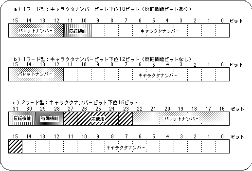

<HTML>
<HEAD>
<TITLE> Pattern name data </​​TITLE>
</HEAD><BODY>

<P> <A HREF="pr8-6-3.htm"> Return to previous page </A> | <A HREF="../index.htm"> Return to menu </A> | <A HREF = "pr8-6-5.htm"> Go to next page </A> </BR> </P> <HR>


<H3>
Pattern name data
</H3>

<P>
The pattern name data is data obtained by extracting the following two pieces of information from the dot unit data created as character patterns.
</P>

<PRE>
Character number: Character pattern start address (VRAM)
                              Character pattern is stored with 20H as one unit
Pallet number: Pallet number (color RAM) of the color palette to be used
</PRE>

<P>
The pattern name data is finally composed of the above two information plus the following two function control bits related to the character pattern.
</P>

<P>
Special function bit (2 bits): Controls special color operation and special priority <BR>
Inversion function bit (2 bits): Controls up / down / left / right inversion of character pattern
</P>

<P>
Pattern name data is classified into the three types shown in a), b) and c) in the figure below based on the difference in the amount of information included.
<BR>
(For details, see the next section.) <BR>
The figure is an image model of pattern name data. From this figure, you can see that special function bits and inversion function bits may or may not be included depending on the pattern name data type.
</P>

<H4> Figure 8-10 Pattern name data image </H4>


<P>
The pattern name data is used when setting the page. A pattern name data table is created by collecting 64 x 64 continuous pattern name data as a set, and the layout information is passed to the plane and map.
</P>

<HR>
<P> <A HREF="pr8-6-3.htm"> Return to previous page </A> | <A HREF="../index.htm"> Return to menu </A> | <A HREF = "pr8-6-5.htm"> Go to next page </A> </BR> </P> </BODY> </HTML>